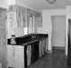
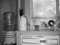
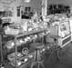
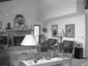
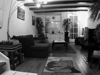
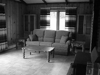

Project 4: Scene Recognition with Bag of Words
The goal of this project is image recognition. We will classify scenes into one of 15 categories by training and testing on the 15 scene database. We use 2 types of features to represent image information: tiny images and SIFT. We use 2 types of classifiers to train the data: nearest neighbor and SVM. We will discuss the results on these combinations:
- tiny images + Nearest Neighbor
- bag of SIFT + Nearest Neighbor
- bag of SIFT + linear SVM
Part 1: tiny images + Nearest Neighbor
To build a tiny image feature, we simply resize the original image to a very small square resolution (16x16). We resize the images to square and also crop the center square portion out of each image thus making the tiny images zero mean and unit length (normalizing them).
for i = 1:size(image_paths,1)
im = im2double(imread(image_paths{i}));
dis = imresize(im,[16,16]);
mean = mean2(dis);
for j = 1:size(dis,1)
for k = 1:size(dis,2)
dis(j,k) = dis(j,k) - mean;
end
end
dis = dis/std2(dis);
image_feats(i,:) = reshape(dis,[1,256]);
end
For the nearest neighbor classifier, we find the nearest training example and assign the test case the label of that nearest training example.
D = vl_alldist2(train_image_feats',test_image_feats');
[~,I] = min(D);
predicted_categories = cell(size(test_image_feats,1),1);
for i = 1:size(test_image_feats,1)
predicted_categories{i} = train_labels{I(i)};
end
Results
Confusion Matrix for tiny images + NN
We get an accuracy of 22.4%. This is not a particularly good representation, because it discards all of the high frequency image content and is not especially invariant to spatial or brightness shifts.
Part 2: bag of SIFT + Nearest Neighbor
First we need to build a vocabulary of visual words. To do this, we load images from the training set. For each loaded image, we get some SIFT features. Once we have tens of thousands of SIFT features from many training images, cluster them with kmeans. The resulting centroids are now our visual word vocabulary.
features1 = cell(1,500);
step = 3;
for i = 1:size(image_paths,1)
[~,features] = vl_dsift(single(imread(image_paths{i})),'norm','step',step);
features1{1,i} = features;
end
f = cell2mat(features1);
single_f = single(f);
vocab = vl_kmeans(single_f,vocab_size);
vocab = vocab';
Next, we need to write get_bags_of_sifts.m. We construct SIFT features here in the same way we did in build_vocabulary.m (except for changing the sampling rate) and then assign each local feature to its nearest cluster center and build a histogram indicating how many times each cluster was used. We also normalize the histogram, or else a larger image with more SIFT features will look very different from a smaller version of the same image.
step = 4;
for i = 1:size(image_paths,1)
[~,features] = vl_dsift(single(imread(image_paths{i})),'norm','step',step);
dis = vl_alldist2(single(features),vocab');
row = size(vocab,1);
feat = zeros(1,row);
for j = 1:size(features,2)
[~,index] = min(dis(j,:));
feat(index) = feat(index) + 1;
end
image_feats(i,:) = feat/sum(feat);
end
Results
Confusion Matrix for bags of SIFT + NN
We get an accuracy of 50.9%. The values of the free parameters are: step size = 4 for both build_vocabulary.m and get_bags_of_sifts.m, vocab size = 200. The runtime is ~30 mins which is realy large since the step size is small.
Confusion Matrix for bags of SIFT + NN
We get an accuracy of 47.9%. The values of the free parameters are: step size = 4 and 10 for build_vocabulary.m and get_bags_of_sifts.m respectively, vocab size = 200. The runtime is ~17 mins.
Part 3: bag of SIFT + linear SVM
The task is to train 1-vs-all linear SVMS to operate in the bag of SIFT feature space. The feature space is partitioned by a learned hyperplane and test cases are categorized based on which side of that hyperplane they fall on. To decide which of 15 categories a test case belongs to, we will train 15 binary, 1-vs-all SVMs. 1-vs-all means that each classifier will be trained to recognize 'forest' vs 'non-forest', 'kitchen' vs 'non-kitchen', etc. All 15 classifiers will be evaluated on each test case and the classifier which is most confidently positive "wins". The code for svm_classify.m is as follows:
for i = 1:num_categories
matching_indices = strcmp(categories{i},train_labels);
labels(find(~matching_indices)) = -1;
labels(find(matching_indices)) = 1;
labels = double(labels);
[W(:,i), B(1,i)] = vl_svmtrain(train_image_feats',labels,LAMBDA);
end
dis = zeros(1,num_categories);
for i = 1:size(test_image_feats,1)
for j = 1:num_categories
dis(1,j) = dot(test_image_feats(i,:),W(:,j)+B(1,j));
end
[~,index] = max(dis);
predicted_categories{i} = categories{index};
end
Results
Confusion Matrix for bags of SIFT + linear SVM
We get an accuracy of 63.1%. The values of the free parameters are: step size = 4 and 10 for build_vocabulary.m and get_bags_of_sifts.m respectively, vocab size = 200, LAMBDA = 0.000001. The runtime is ~14 mins.
Extra Credit: Experiment with different vocabulary sizes
Used bags of SIFT and linear SVM classifier. The step size is 4 and 10 for build_vocabulary.m and get_bags_of_sifts.m respectively, LAMBDA = 0.000001.
| Vocabulary Size | Accuracy | Confusion Matrix |
|---|---|---|
| 10 | 35.4% | |
| 20 | 46.5% | |
| 50 | 54.5% | |
| 100 | 59.4% | |
| 200 | 63.1% | |
| 400 | 61.8% | |
| 1000 | 65.5% |  |
Extra Credit: RBF kernel for non-linear SVM
Implemented a non-linear SVM with RBF kernel, Used bags of SIFT and non-linear SVM classifier. The code for rbf_svm_classify.m is as follows:
for i = 1:num_categories
matching_indices = strcmp(categories{i},train_labels);
matching_indices = double(matching_indices);
matching_indices(find(~matching_indices)) = -1;
svm_train_labels = double(matching_indices);
svm_model{i} = fitcsvm(double(train_image_feats),svm_train_labels,'KernelFunction','rbf');
end
for i = 1:num_categories
[~,scores] = predict(svm_model{i},test_image_feats);
confidence(i,:) = (scores(:,2))';
end
[~,index] = max(confidence);
dis = zeros(1,num_categories);
for i = 1:size(test_image_feats,1)
predicted_categories{i,1} = categories{index(i)};
end
Results
Confusion Matrix for bags of SIFT + non-linear SVM
We get an accuracy of 57.4%. The values of the free parameters are: step size = 4 and 10 for build_vocabulary.m and get_bags_of_sifts.m respectively, vocab size = 200. The runtime is ~16 mins.
Extra Credit: GIST Descriptor
Implemented GIST features with LMgist.m and imresizecrop.m functions taken from Olivia et al. Used GIST features and linear SVM classifier. The code for get_gist_feats.m is as follows:
for i = 1:size(image_paths,1)
im = single(imread(image_paths{i}));
param.imageSize = [256 256];
param.orientationsPerScale = [8 8 8 8];
param.numberBlocks = 4;
param.fc_prefilt = 4;
image_feats(i,:) = LMgist(im,'',param);
image_feats(i,:) = image_feats(i,:)/sum(image_feats(i,:));
end
Results
Confusion Matrix for GIST + SIFT + linear SVM
We get an accuracy of 60.3%. LAMBDA = 0.000001. The runtime is ~35 mins.
Extra Credit: Fisher Encoding
Implemented a more sophisticated feature encoding scheme: fisher encoding. The code for get_fisher_feats.m is as follows:
features = [];
for i = 1:size(image_paths,1)
[~,features1] = vl_dsift(single(imread(image_paths{i})),'norm','step',8);
features = [features,features1];
end
[means,covariances,priors] = vl_gmm(double(features),clusters);
load('vocab_fisher_20.mat','means','covariances','priors')
for i = 1:size(image_paths,1)
[~,features] = vl_dsift(single(imread(image_paths{i})),'norm','step',8);
image_feats(i,:) = vl_fisher(double(features),means,covariances,priors,'normalized');
end
Results
| Number of Clusters | Accuracy | Runtime | Confusion Matrix |
|---|---|---|---|
| 10 | 49.3% | ~12 minutes | |
| 20 | 53.8% | ~13 minutes | |
| 50 | 50.3% | ~13 minutes | |
| 100 | 52.7% | ~14 minutes |  |
Results visualization for best performing recognition pipeline.
Accuracy (mean of diagonal of confusion matrix) is 65.5% using SIFT + SVM with vocab size = 1000.
| Category name | Accuracy | Sample training images | Sample true positives | False positives with true label | False negatives with wrong predicted label | ||||
|---|---|---|---|---|---|---|---|---|---|
| Kitchen | 0.470 |  |
 |  |
Store |
 Bedroom |
Office |
 InsideCity |
|
| Store | 0.490 |  |
 | LivingRoom |
 Kitchen |
 TallBuilding |
 Industrial |
||
| Bedroom | 0.420 |  |
 Coast |
 Store |
 LivingRoom |
Kitchen |
|||
| LivingRoom | 0.340 |  |  |
 Bedroom |
InsideCity |
 Office |
 Kitchen |
||
| Office | 0.880 |  LivingRoom |
 Store |
Kitchen |
Bedroom |
||||
| Industrial | 0.580 |  Kitchen |
 Store |
InsideCity |
 Bedroom |
||||
| Suburb | 0.980 |  |
 |
 Industrial |
OpenCountry |
 LivingRoom |
 Store |
||
| InsideCity | 0.510 |  Store |
 LivingRoom |
 Coast |
 TallBuilding |
||||
| TallBuilding | 0.720 |  |
 |
 Street |
Bedroom |
Mountain |
Industrial |
||
| Street | 0.630 |  |
Bedroom |
 Store |
TallBuilding |
 Industrial |
|||
| Highway | 0.810 |  |
 Street |
 LivingRoom |
 Bedroom |
 LivingRoom |
|||
| OpenCountry | 0.480 | Coast |
 Mountain |
 Mountain |
Coast |
||||
| Coast | 0.770 |  |
 |
 OpenCountry |
 OpenCountry |
 Highway |
 Mountain |
||
| Mountain | 0.830 |  |
 Forest |
 Store |
 OpenCountry |
Suburb |
|||
| Forest | 0.920 |  |
 |
 OpenCountry |
 Store |
 Store |
Mountain |
||
| Category name | Accuracy | Sample training images | Sample true positives | False positives with true label | False negatives with wrong predicted label | ||||